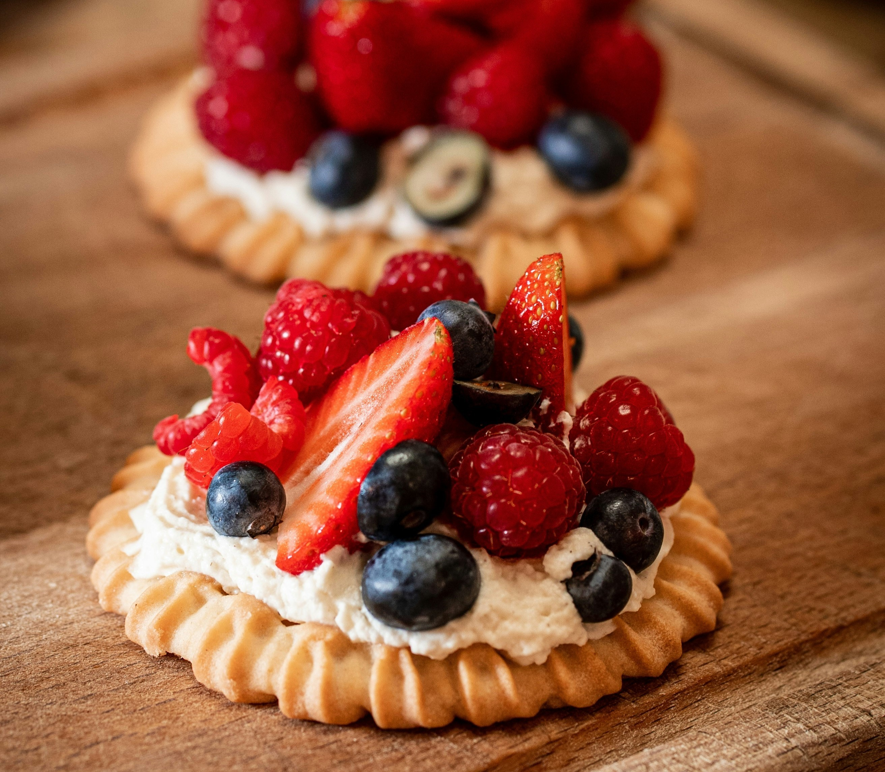

台北中山咖啡廳10間推薦！
2023中山咖啡廳推薦最新清單！IG洗版不限時復古咖啡廳
A小姐
PUBLISHED: 2023/09/01
2455瀏覽 | 231人說讚
澄光咖啡坐落於城市裡的一隅神秘角落，暖日深夜咖啡廳，低調的店門讓人想一窺門後的面貌。
來到這裡用餐仿佛回到溫馨的老家，簡單的布丁、巴斯克讓人流連忘返，
每天供應的甜食品項都不同，可以品嘗到精心安排的餐點組合。
無拘束的自在氛圍值得一訪再訪。
中山區Top10 咖啡廳
以韓系廢墟裝潢搭配俏皮的塗鴉風，瞬間成為IG熱門打卡點，彩色傢俱更是童趣感十足， 擺上布丁和戚風蛋糕超級可愛，絕對是到中山商圈必訪的咖啡廳！
以韓系廢墟裝潢搭配俏皮的塗鴉風，瞬間成為IG熱門打卡，
擺上布丁和戚風蛋糕超級可愛，絕對是到中山商圈必訪的咖啡廳！